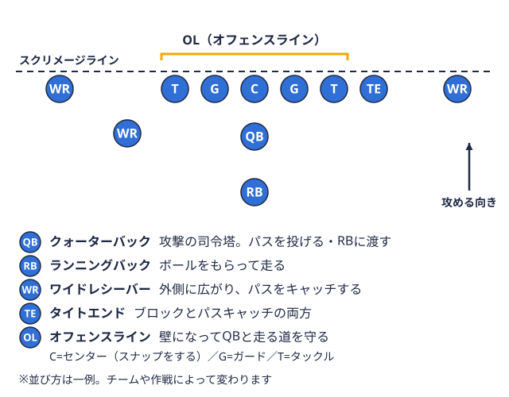
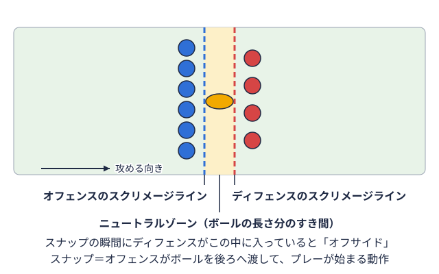
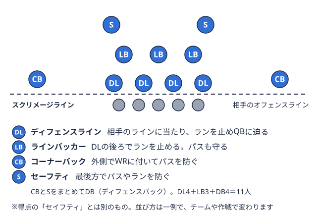

ポジション別 2026-09-15
アメフトQBに必要な5つの能力と練習法｜大学部員向けドリル付き
「QB攻撃の司令塔。作戦に合わせて、パスを投げたり、走る選手にボールを渡したりする。 
この記事のポイント
QBの能力は、練習の種類ごとに分けて鍛えると整理しやすくなります。能力と主な練習法の対応は次のとおりです。
| 能力 | 主な練習法 | この記事の見出し |
|---|---|---|
| 判断力と視野 | 守備の並びを読む、レシーバーを順に見る、映像で振り返る | 判断力を鍛える練習法 |
| パス精度 | 片膝・両膝投げで固めてから距離を伸ばす、動きながら投げる | パス精度を高める練習法 |
| 肩の強さとスピード（フットワーク含む） | ドロップバックの足さばき、ポケット内の動き、体づくり | フットワークを鍛える練習法／体づくりの土台 |
| リーダーシップ | ハドルでの声かけ、日々のコミュニケーション | リーダーシップとメンタル面を養うには |
| プレッシャー下のメンタル | 時間制限やノイズを加えた実戦形式の練習 | リーダーシップとメンタル面を養うには |
QBに求められる5つの能力
複数の解説メディアに共通して挙げられている、QBに求められる能力は主に次の5つです。
- 判断力と視野 ― コーチから伝えられた作戦をそのまま実行するだけでなく、相手守備の陣形を見て作戦を変更する「オーディブル」の判断や、パスを受けた後の広い視野が必要とされています（調整さん「チームの司令塔！〜アメフトのQBに求められる能力〜」）。
- パス精度 ― レシーバーが取りやすい位置に、守備に阻まれずボールを届けるコントロールが重要とされます。パスの精度が試合の展開を左右するという指摘は複数の記事で共通しています。
- 肩の強さとスピード ― 遠くへ速いパスを通す肩の強さに加えて、守備にパスコースを塞がれた際に自分で走る選択肢を持てるスピード・機動力も評価対象に挙げられています（Inside out「【アメフトのポジション】クォーターバック（QB）とは？」）。
- リーダーシップ ― チーム内の信頼関係を築き、オフェンス全体をまとめる役割としての側面も強調されています。
- プレッシャー下でのメンタル ― 守備のプレッシャーを受けながら短時間で判断を下す場面が多く、精神的な強さも必要とされる能力のひとつです。
これらはいずれも一朝一夕に身につくものではなく、判断力・技術・フィジカルのそれぞれを別々に鍛える意識を持つことが、遠回りに見えて近道になりやすい傾向があります。
判断力を鍛える練習法
判断力は、守備を見る順序を決めて練習に落とし込むと鍛えやすくなります。ここでは「スナッププレー開始の動作。地面に置いたボールを、攻撃側の選手が後ろへ渡す。 
スナップ前に守備の並びを読む
結論として、プレーが始まる前に守備の並びを確認する習慣をつけることが、オーディブルの判断の土台になると考えられます。
- 守備のフロント（ラインやLB守備の最前列のすぐ後ろに立ち、走るプレーを止め、パスも守る選手。守備の要といわれる。

用語辞典で見るの位置）とセカンダリー（DB守備の後ろ側で、相手のパスを防ぐ選手の総称。後方と外側を守る。用語辞典で見るの位置）を、毎回同じ順番で確認する - 並びからどんなカバーやブリッツラインの後ろに立つ守備選手も一緒に突っ込み、パスを投げる選手に迫る守り方。用語辞典で見るが考えられるかを、仮に一つ予想してからスナップに入る
- 練習中に守備側の陣形パターンをいくつも見せてもらい、「このプレーは通る／通らない」を瞬時に仮判断する
守備の並びの用語はフォーメーション用語の基本ガイド、守備側の考え方はディフェンス戦術の基本で整理しているので、あわせて確認してみてください。
スナップ後にレシーバーを順番に見る
スナップ後は、最初から1人のレシーバーだけを見続けず、決めた順番で視線を動かすことが基本とされています。
- プレーごとに「第1レシーバー→第2レシーバー→…」と見る順番をあらかじめ決めておく
- 守備のカバーの動きを見て、空いているレシーバーに視線を移す練習をする
- レシーバー側のルートの動きを理解しておくと、投げるタイミングの判断がしやすくなる
レシーバーのルートの基本はWRのルートランニングの基礎も参考になります。
映像で振り返る
練習後や試合後に、コーチとともに映像を見返し、相手の守備陣形とその後の展開を照らし合わせながら「なぜそのプレーが機能した・しなかったのか」を言語化していく方法がよく紹介されています。QBは他のポジションよりもミーティングに割く時間が長い傾向があるという指摘もあり、グラウンドでの反復と同じくらい、映像を使った振り返りが判断力の土台になります。映像の撮影や分析はアナライザー試合や練習の映像・データを分析し、チームに相手の情報や戦い方を伝える裏方のスタッフ。用語辞典で見るが担う場合も多いため、アナライザーの仕事ガイドも読んでおくと、依頼の仕方をイメージしやすくなります。
オーディブルの判断は、実戦形式の練習で、あらかじめ決められたプレーだけでなく状況に応じた選択を求められる場面を増やすことで、判断のスピードを上げる助けになる場合があります。
パス精度を高める練習法
パス精度は、いきなり試合と同じ距離・状況で投げるのではなく、段階を踏んで高めていく練習法が紹介されています。
フォームを固めるドリル（片膝・両膝投げ）
結論として、段階練習の最初の一歩は、下半身の動きを抑えて上半身のフォームに集中できる片膝・両膝での投球とされています。
- 片膝または両膝をついた姿勢で、近い距離のパートナーに投げる
- 肘の位置、ボールの握り、リリース後の腕の振り抜きなど、確認する点を一度に増やしすぎず絞る
- フォームが安定してから、立った姿勢での投球に移る
英語圏のQB向け解説（Active.com「9 Drills to Improve a Quarterback's Form」など）でも、こうしたフォーム固めのドリルが紹介されています。
距離を伸ばす・動きながら投げる
フォームが固まったら、近距離から少しずつ距離を伸ばしていきます。フォームが崩れたまま距離だけを伸ばすと精度が安定しにくくなる傾向があるため、距離を伸ばす前にフォームの再確認を挟むことが有効とされています。
さらに、守備役を立てたプレッシャー下でのパス練習や、動きながら投げるロールアウトパスの練習を取り入れる方法も紹介されています。試合では静止した状態で投げられる場面ばかりではないため、レシーバーとの連携を含めた実戦形式の練習に早めに移行することが、実際の試合でのパス精度につながりやすいとされています。
フットワークを鍛える練習法
守備のプレッシャーをかわし、安定した姿勢で投げるには、足の運びを練習で身につけておくことが重要とされます。ここでは「ドロップバック」と「ポケット内の動き」に分けて整理します。
ドロップバックの足さばき
結論として、ドロップバックは、リズムよく同じ足運びを反復して身につける練習が定番です。
- スナップを受けた後、後ろへ下がる足運びを、毎回同じ歩数・同じリズムで行う
- 下がり終わったときに、バランスを保って投げる姿勢に入れているかを確認する
- 慣れてきたら、下がった直後にパートナーへ投げる動作までつなげる
USA Footballのオフシーズン向け解説では、ドロップバックの足さばきを素早く反復する「クイックステップ」のドリルが紹介されています。歩数や時間は練習環境によって変わるため、チームのコーチの指示に合わせてください。
ポケット内の動き（シャッフル・スライド・ステップアップ）
ポケットとは、OLスクリメージライン上に並ぶ5人の壁役。パスを投げる選手を守り、走る選手の道を作る。用語辞典で見るが作る守備からの圧力を防ぐスペースのことです。パスが投げ切れないときは、このスペースの中で動いて投げる場所を作ります。
- シャッフル・スライド：左右へ小さく動いて、迫ってくる守備を避けつつレシーバーを見続ける
- ステップアップ：外側から迫られたとき、ポケットの前方に一歩踏み込んで投げる準備をする
- いずれも、目線を下げずに前を見たまま足を動かすことを意識する
こうしたポケット内の動きはポジション別ドリル集（sportsunlimitedinc.com「Football Drills by Position」）でも紹介されています。ポケットを作るOL側の考え方はOLのパスプロテクションガイドを読むと、QBとの連携をイメージしやすくなります。
初速とアジリティ
守備からのプレッシャーをかわしてパスコースを作るには、初速も欠かせません。40ヤード走のタイムを縮める方法ではスタート技術や加速フェーズの考え方を、アジリティトレーニングの種目では方向転換を鍛える種目を整理しているので、QBのフットワーク強化の参考にしてみてください。
体づくりの土台
QBのパフォーマンスは技術面だけでなく、体づくりにも支えられています。専門メディアでは、下半身（スクワット・デッドリフト・ランジなど）、体幹（プランク・メディシンボールを使った回旋動作など）、肩まわり（ベンチプレスやバンドを使った肩の安定性強化）をバランスよく鍛える全身トレーニングが紹介されており、投球力だけでなく怪我をしにくい体をつくることも重視されています（筋トレ侍「アメフトQB必見｜クォーターバック筋トレ完全ガイド」）。特に肩のケアを怠るとシーズン中にパフォーマンスが落ちやすいという指摘もあり、投げ込みの量だけでなく、肩まわりの補強・ケアを並行して行うことが勧められています。肩のけがの予防は肩のけが予防ガイドでも解説しています。
リーダーシップとメンタル面を養うには
リーダーシップは筋トレのように数値化しにくい能力ですが、ハドル（プレー前の円陣）での声のかけ方や、ミスをしたレシーバー・ラインマンへの接し方など、日々のコミュニケーションの積み重ねが土台になるとされています。プレッシャー下での判断力も同様で、練習からあえて時間制限やノイズを加えた状況をつくり、実戦に近い緊張感の中で意思決定する経験を重ねることが、メンタル面の強化につながる場合があります。
関東TOP8・BIG8でQBを目指す部員へ
同じ関東学生アメフト連盟（KCFA）のTOP8・BIG8に所属するチームでも、オフェンスのスタイルやQBに求める役割はチームによって異なります。対戦校の試合映像や日程を、上で紹介した「映像で振り返る」練習の題材にすると、相手の守備の傾向を踏まえた判断の練習につなげやすくなります。
- TOP8 チーム一覧 ― TOP8所属8大学のチームページへの入り口
- TOP8 日程 ― 対戦校の試合日程の確認に
- BIG8 チーム一覧 ― BIG8所属チームのチームページへの入り口
自分のチームや対戦校の情報を確認しながら、日程・結果と合わせて練習の振り返りに活用してみてください。
よくある質問
初心者からでもQBになれますか？
可能性はありますが、チームの状況やコーチの方針によって変わります。大学から競技を始める場合は、まず片膝・両膝投げなどのフォーム固めと、基本的なルール・用語の理解から始める方法が考えられます。
肩が強くなくてもQBは務まりますか？
肩の強さは評価される要素のひとつですが、能力は肩だけで決まるわけではないとされています。判断力やパス精度、フットワークなど、練習で伸ばせる部分も多いため、自分に足りない要素から確認してみてください。
1人でできる練習は何ですか？
ドロップバックの足さばきや、ポケット内の動き（シャッフル・スライド）の反復、体幹や下半身のトレーニングは、1人でも取り組みやすい練習です。パスそのものはパートナーがいると確認しやすいので、チームの練習時間を活用するとよいでしょう。
オフシーズンは何を優先すればよいですか？
一般的には、体づくりとフットワーク、フォームの見直しなど、試合の形式では取り組みにくい基礎を優先する考え方があります。優先順位は個人の課題で変わるため、コーチと相談して決めてください。
まとめ
QBに求められる能力は、判断力・パス精度・肩の強さやスピード・リーダーシップ・プレッシャー下でのメンタルと多岐にわたります。これらは感覚だけに頼らず、守備の読みを段階に分けた判断力の練習、フォームから固める段階的なパス練習、ドロップバックやポケット内のフットワーク、全身を使ったフィジカルトレーニングというように、それぞれを分解して練習メニューに落とし込むことで、着実に伸ばしていける部分が多いといえます。すべてを一度に完璧にしようとせず、今の自分に足りない要素を1つずつ確認しながら、練習に取り組んでみてください。
あわせて読む
参考リンク
- チームの司令塔！〜アメフトのQBに求められる能力〜 | 調整さん
- [アメフトQB必見｜クォーターバック筋トレ完全ガイド｜身体を強くする効果的なメニューと実践ポイント | 筋トレ侍](https://kinntorezamurai.jp/2026/03/24/%E3%82%A2%E3%83%A1%E3%83%95%E3%83%88qb%E5%BF%85%E8%A6%8B%EF%BD%9C%E3%82%AF%E3%82%A9%E3%83%BC%E3%82%BF%E3%83%BC%E3%83%90%E3%83%83%E3%82%AF%E7%AD%8B%E3%83%88%E3%83%AC%E5%AE%8C%E5%85%A8%E3%82%AC%E3%82%A4/
- 【アメフトのポジション】クォーターバック（QB）とは？役割・能力について解説 | Inside out
- アメフトのQBとして成功するために大切なことと練習方法 | アクティビティポータル
- Offseason QB workouts: quick step drill improves footwork during the drop back | USA Football
- 9 Drills to Improve a Quarterback's Form | Active.com
本記事は、調整さん・筋トレ侍・Inside out・アクティビティポータルなどが公開している情報をもとに、編集部が構成した一般的な練習ガイドです。能力の伸び方や練習方法の効果には個人差があり、必ずしも同じ結果が得られるとは限りません。練習メニューの導入にあたっては、所属チームの指導者やトレーナーとも相談のうえで取り組むことをおすすめします。
この部活・競技を応援したい方へ
協賛・応援はこちらから。
取材してほしい部活を募集中
あなたの部活・チームを取材してほしい方はこちらから。
オフシーズン・引退後に、長期インターンという選択
部活で培った力を実務で試す。16タイプ診断（30秒）で合う企業がわかります。